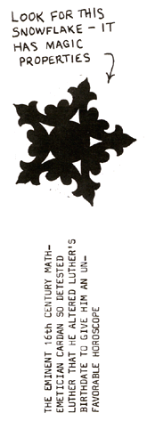

|
POEE ASTROLOGICAL SYSTEM
1. On your next birthday, return to the place of your birth and, at precisely midnight, noting your birth time and date of observation, count all visible stars.
2. When you have done this, write to me and I'll tell you what to do next.
|
The theorem to be proved is that if any even number of people take seats at random around a circular table bearing place cards with their names, it is always possible to rotate the table until at least two people are opposite their cards. Assume the contrary. Let N be the even number of persons, and let their names be replaced by the integers 0 to N-1 "in such a way that the place cards are numbered in sequence around the table. If a delegate D originally sits down to a place card P, then the table must be rotated R steps before he is correctly seated, where R=P-D, unless this is negative, in which case R=P-D+N. The collection of values of D (and of P) for all delegates is clearly the integers 0 to N-1,each taken once, but so also is the collection of values of R, or else two delegates would be correctly seated at the same time. Summing the above equations, one for each delegate, gives S-S+NK, where K is an integer and S=N(N-1)/2, the sum of the integers from 0 to N-1. It follows that N=2K+1, an odd number." This contradicts the original assumption.
"I actually solved this problem some years ago," Rybicki writes, "for a different but completely equivalent problem, a generalization of the nonattacking 'eight queens' problem for a cylindrical chessboard where diagonal attack is restricted to diagonals slanting in one direction only." |

|